Specific nomenclature/terminology and symbols that will be used hereafter.
The Phase 2 Observing Database (ODB) (see Fig. 2) contains details of all the programs of observations. These details are supplied by astronomers using external tools [Clay and Fraser, 2006] or are generated by external intelligent agents [A.N.Other, 1999] (TEA).
|
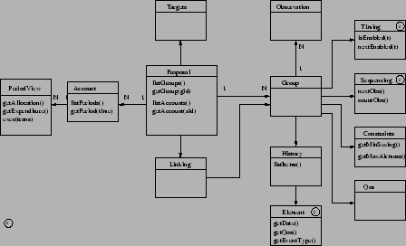
|
Proposals represent an astronomers observing program and correspond directly with the ?general definition? of a TAG allocated proposal. A proposal collects information required to perform the client's observations and time and resource accounting. Programs collect together a number of different proposals for sharing of resource allocation. A proposal may participate in several programs. The unit of scheduling is termed a group and consists of the specifications of the observations, timing requirements, sequencing, observing condition constraints and quality of service metrics. Groups within a proposal may be linked in various ways (Fig. 3 contains details of some of these relationships.
|
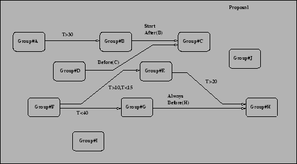
|
Each group has a set of enablement windows 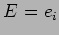 which represent the intervals during which it should be observed if possible - these are obtained from the group's TimeConstraints, e.g. make this observation sometime between t1 and t2. As an added complication these may be cyclic - e.g. perform this observation once every 3 hours between t1 and t2. Some observations have fixed time constraints (do this at t3) or sliding fixed time constraints (do this at t1 or t2 or t3).
The times when the group can actually be observed are further constrained by a number of factors:-
Taken together these result in considerable uncertainty in the time spans available for observing (active windows). In such a dynamic environment any advanced planning can become rapidly out of date.
The figures below illustrate 2 scenarios which might arise. 1- period monitor, 2- long flexible - one with real weather superimposed would be spiffing - this is tricky!
INSERT FIGURE showing enablement intervals and stuff..
A schedule can be any of the following in increasing degree of generalization:-
Note: These paras need hacking about..
We choose to describe a schedule using a graph where each node i represents a tuple of the form
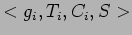, where 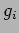 is a group, 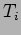 is a time interval
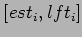 spanning the earliest start time and latest finish time for , represents a set of boolean constraints
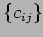 on the current (at the time of execution) environmental conditions under which which the group may execute and  is a priority score which allows a decision to be made when several groups can be executed at a given decision point. An example of a set
is a priority score which allows a decision to be made when several groups can be executed at a given decision point. An example of a set  might be
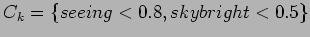 indicating that group 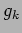 may be performed if the current atmospheric conditions satisfy the 2 constraints specified. The schedule must be executed in sequence by following a path through the graph from the start node. The duration of each group cannot be determined precisely in advance (though it can be estimated with reasonable accuracy) due to variable acquisition times, slewing and settling of directional and rotator axes and instrument internal configuration - we shall attempt to characterize this as part of the project.
might be
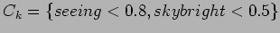 indicating that group 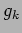 may be performed if the current atmospheric conditions satisfy the 2 constraints specified. The schedule must be executed in sequence by following a path through the graph from the start node. The duration of each group cannot be determined precisely in advance (though it can be estimated with reasonable accuracy) due to variable acquisition times, slewing and settling of directional and rotator axes and instrument internal configuration - we shall attempt to characterize this as part of the project.
The depth (path length) of the schedule we shall define as the horizon length and denote 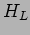 - this is the number of groups which can potentially be executed before the scheduler must be invoked again as part of the SEU cycle. In addition we define the horizon time 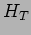 as the difference between the largest 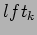 in any leaf node of the graph and of the first node and is the longest span we expect the schedule to be valid for.
As increases, the chances of a schedule breaking (next para) will increase - the characterisation of this parameter under various regimes will constitute part of this project
As a special case dynamic despatch scheduling has 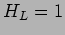 and 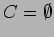 indicating that the schedule contains a single group which is by definition executable under the current conditions.
The overall architecture of the system is described in Fig. 4. The OSS consists of the Scheduler, an UpdateEngine with associated QOS metric thingies and the ODB - the later consisting of Phase2, accounting and execution history databases. The RCS makes information about current conditions and time constraints available to the OSS continuously from which the OSS is able to make predictions about future conditions. When the RCS considers the telescope is available and the conditions suitable for observing it sends a request_schedule to the OSS. The scheduler interrogates the ODB and selects a schedule suitable for the current and predicted conditions and constraints. The RCS works its way through the schedule by selecting and executing groups. At each decision point a group is selected by comparing the validity time window, constraints and priority score then decomposing the group into a hierarchy of parallel tasks [Fraser and Steele, 2002] and sending commands to the TCS to control the telescope and to the ICS to configure and control the instrument(s). If a decision point is reached where no group in the schedule can be executed the schedule breaks and the scheduler must be invoked to generate a new schedule. As each group is completed (or fails) execution_results are sent to the OSS containing information about the execution of the group. The UpdateEngine uses this and the group-specific QOS metrics to update the Accounting and History databases.
|
|
In the current system the overheads associated with the schedule-execute-update cycle amount to the sum of the schedule generation and instrumentation setup times and . This occurs for each cycle i.e. for each group executed. If the group execution time then this is not a great problem. However in the case of groups with short execution times considerable efficiency increases could be achieved by generating a longer schedule sequence with groups chosen so that the setup time between groups is minimized. Real world examples of this scenario have been observed where a pair of short period (in the order of 5 minute) monitoring groups with close targets and with durations of about 2 minutes incurred the full schedule and setup overheads when a pre-defined sequence could have selected the groups to execute in an interleaved fashion with minimal overheads. Another more extreme situation was observed where a single short period monitor was picked to run several times in succession but with the full slew and aquire setup overhead when a pre-defined sequence would have avoided the need to re-aquire the target thus reducing the overhead to almost zero.